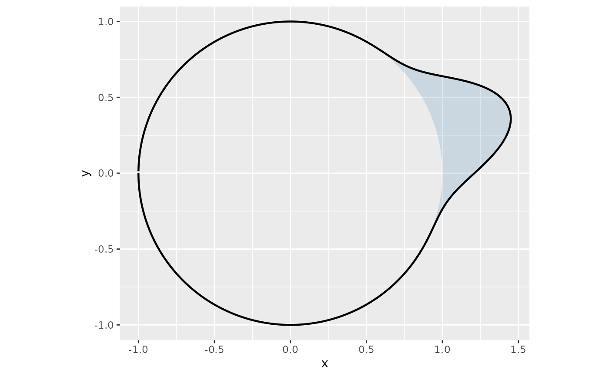

add_heading_density.RdConvenience wrapper that calls [compute_circular_density()] followed by [add_circular_density()]. Equivalent to: “`r add_circular_density( compute_circular_density(headings_df, heading_col, colour_col, method, ...), colour_col = colour_col, scale = scale, ... ) “`
add_heading_density(
headings_df,
heading_col = "heading",
colour_col = NULL,
method = c("vonmises", "kernel", "histogram"),
n_theta = 500L,
bins = 36L,
bw = NULL,
boot_reps = 0L,
boot_alpha = 0.05,
scale = 0.4,
colour = "black",
fill = NA,
alpha = 0.2,
linewidth = 0.8,
ci_fill = "grey70",
ci_alpha = 0.3
)Data frame containing heading angles.
Name of the heading column (radians). Default `"heading"`.
Optional grouping column. When set, one density is computed per group and the column is included in the output.
Estimation method: `"vonmises"` (default), `"kernel"`, or `"histogram"`.
Number of angular evaluation points for smooth methods. Default `500`.
Number of angular bins for the histogram method. Default `36` (10° each).
Bandwidth passed to [circular::density.circular()]. `NULL` uses [circular::bw.nrd.circular()].
Integer. Number of bootstrap replicates for a `"vonmises"` confidence band. `0` (default) skips the bootstrap. Ignored for `"kernel"` and `"histogram"`.
Significance level for the bootstrap band. Default `0.05` produces a 95% interval.
Maximum radial extension above the unit circle. Default `0.4` (peak at r = 1.4). Density is normalised within each group before scaling.
Fixed line colour used when `colour_col` is `NULL`. Default `"black"`.
Colour for the region between the unit circle and the density curve. `NA` (default) draws no fill.
Alpha transparency for the filled polygon. Default `0.2`.
Width of the density path. Default `0.8`.
Fill colour for the bootstrap confidence band. Only used when `density_df` contains `density_lower` and `density_upper` columns (produced by [compute_circular_density()] with `boot_reps > 0`, or supplied manually). Default `"grey70"`.
Alpha transparency for the confidence band polygon. Default `0.3`.
A list of one or two ggplot2 layers.
Use [compute_circular_density()] + [add_circular_density()] directly when you need to inspect or replace the density values before plotting (e.g. to substitute a Bayesian posterior predictive density from `brms`).
[compute_circular_density()], [add_circular_density()]
library(ggplot2)
hd <- data.frame(heading = c(0.2, 0.3, 0.4, 0.5, -0.1, 0.1, 0.6, 0.2))
ggplot() + coord_fixed() + add_heading_density(hd, fill = "steelblue", scale = 0.5)
